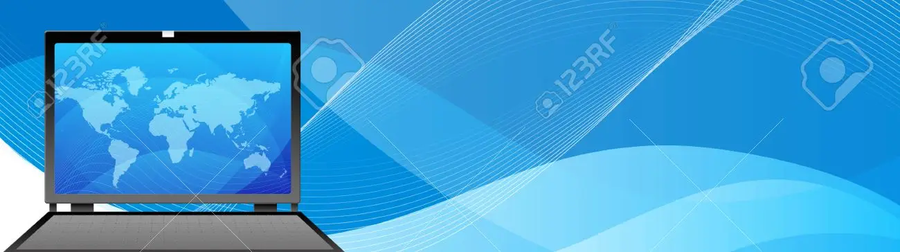

|  | Adicionada Linha | |||
|---|---|---|---|---|
A seguradora da Galáxia!Na década de 2430, o corretor Naruto Gama, descendente do descobridor espacial Camilo Gama fundou a Nossa Corretora de Seguros Ltda. Seu objetivo era prestar consultoria para os moradores de Marte e demais colônias, atendendo a todas as suas necessidades e apresentando um serviço diferencial. Ao longo dos anos, a Nossa cresceu e hoje é o Grupo Nossa, contando com outras cinco empresas subsidiárias ou parceiras. Com 130 anos de negócio, a Nossa mantém sua maior qualidade, o compromisso com cliente, oferecendo conforto e prestando auxílio aos nossos segurados, através do neto do Sr. Naruto, o querido Kuririn Gama ; O objetivo é promover a melhor consultoria para nossos clientes. Desde de o processo de procura até o pós-venda, nossa equipe acompanha os segurados através de recursos modernos e tecnológicos. A nossa prioridade é viabilizar o conforto e proteção financeira para os riscos diários (chuva de meteoros, radiação solar, ataque dos Kiptonianos, Vendaváis Cósmicos e Arrastões Espaciais). Nos mantemos atualizados e sempre dispor aos clientes uma experiência moderna e agradável. Por meio de serviços diferenciados e gestão moderna, a Nossa tem como meta maior se tornar referência no mercado de seguros da galáxia. |
||||
| Para mais informações entre em contato em Marte atráves do telefone quantico 7H9Jl90KH6_+GrA | ||||